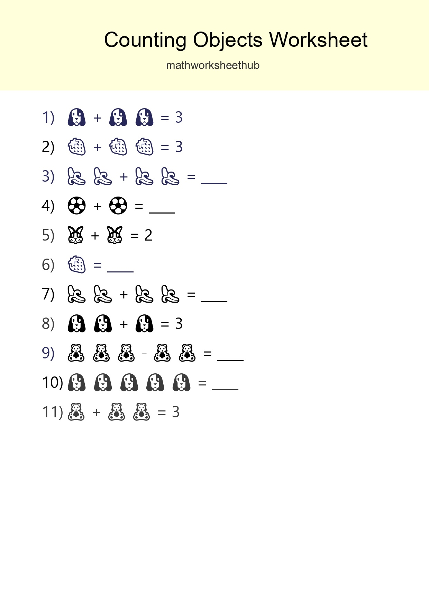
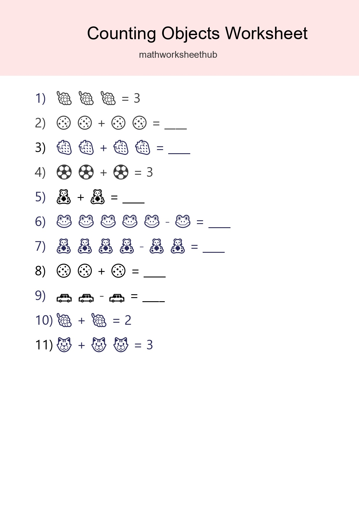
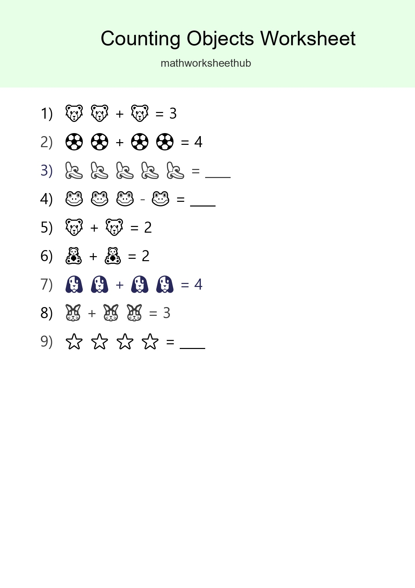
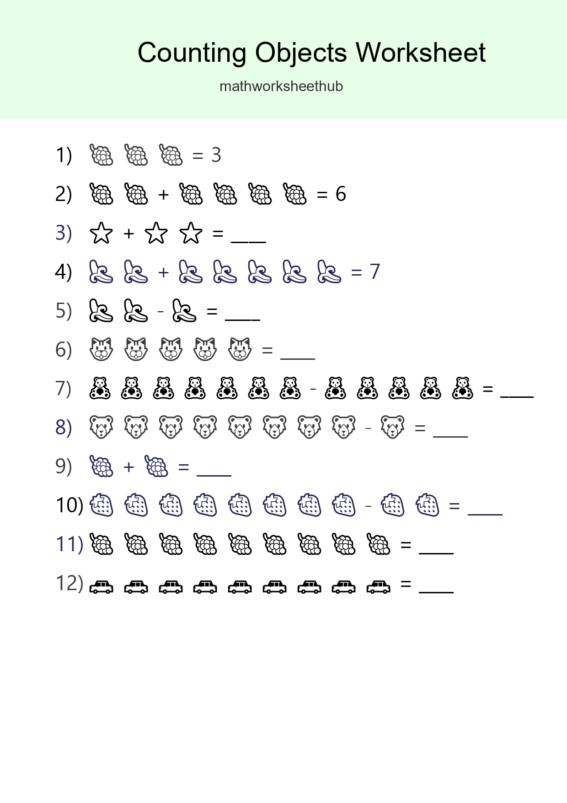

Pre-K Count The Objects Worksheet - Part 3

Pre-K Count The Objects Worksheet - Part 15

Pre-K Count The Objects Worksheet - Part 27

Kindergarten Count The Objects Worksheet - Part 39

Free Counting Objects Worksheet For Kindergarten Printable - Part 51

Learn Counting With Pictures Worksheet (Kindergarten) - Part 63

Free Counting Objects Worksheet For Kindergarten - Part 75

Free Counting Objects Worksheet For Kindergarten Printable - Part 87

Pre-K Count The Objects Worksheet - Part 99

Free Counting Objects Worksheet For Kindergarten - Part 111

Free Counting Objects Worksheet For Pre-K Printable - Part 123

Learn Counting With Pictures Worksheet (Kindergarten) - Part 135

Kindergarten Count The Objects Worksheet - Part 147

Learn Counting With Pictures Worksheet (Pre-K) - Part 159

Free Counting Objects Worksheet For Kindergarten - Part 171

Free Counting Objects Worksheet For Pre-K Printable - Part 183